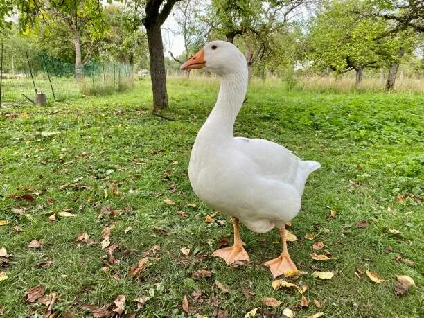
Гусь под деревом сидит
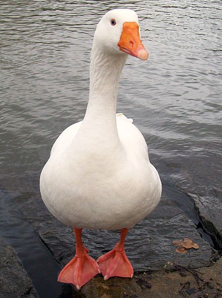
Гусь у воды
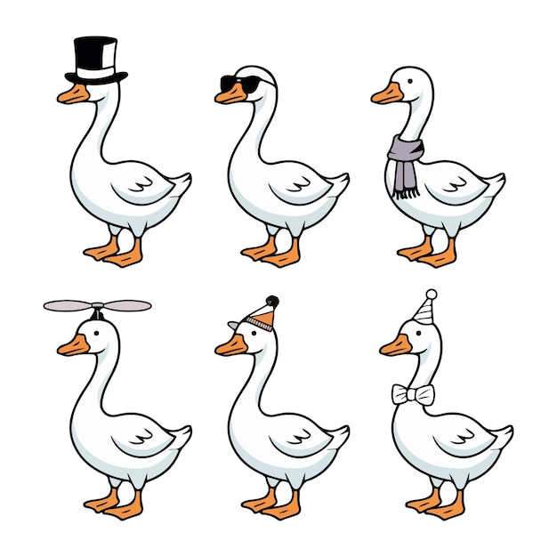
Гуси, гуси, ГУСИ!

Болотный первопроходец
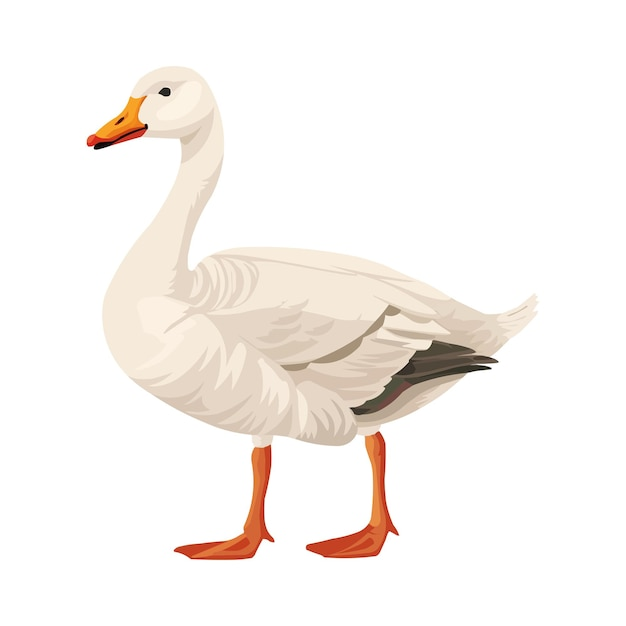
Гусечек
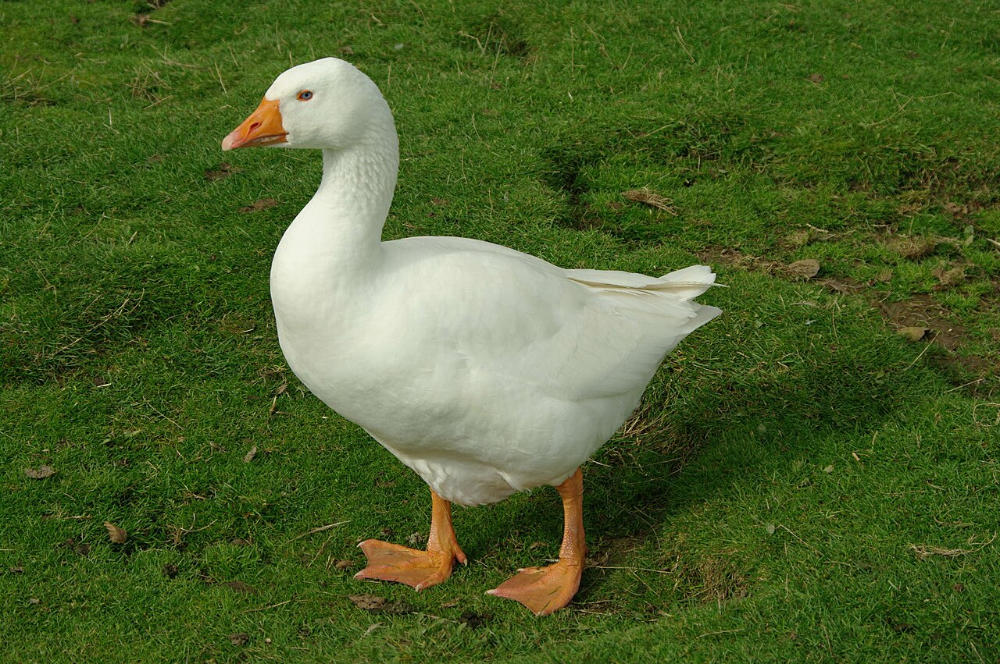
Гусь на травке
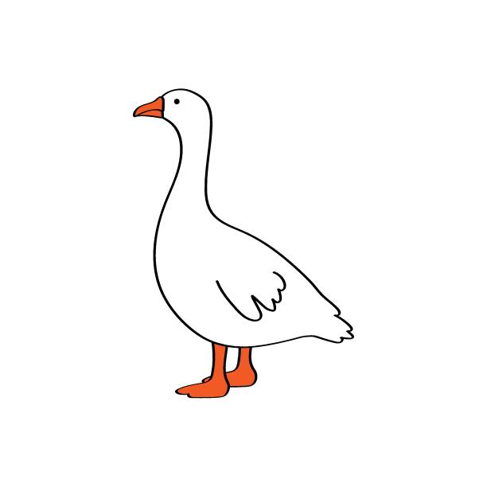
Важный гусик
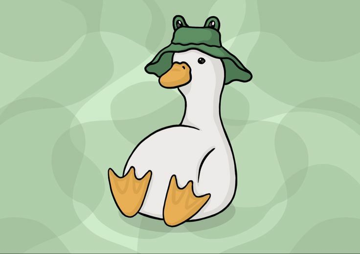
Зелёничек

Смотрящий в даль
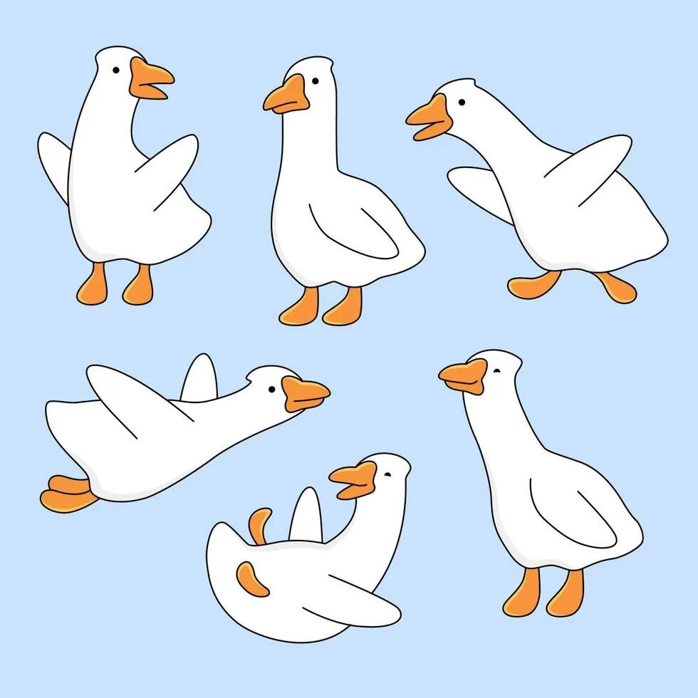
Гусииии
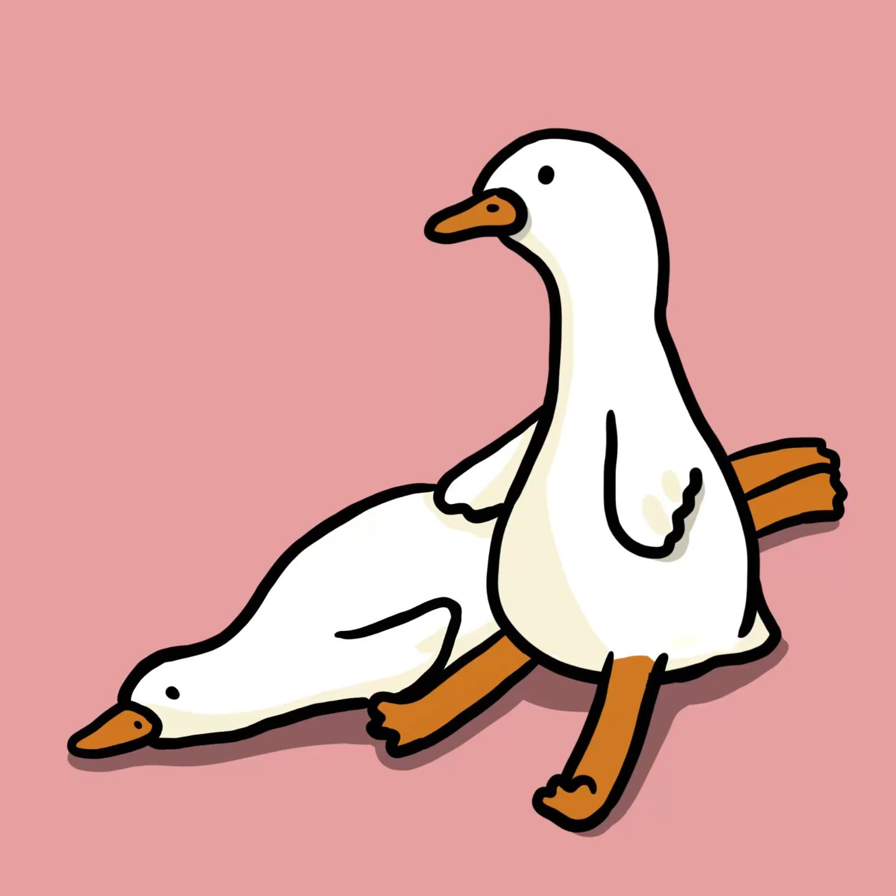
Два гуся
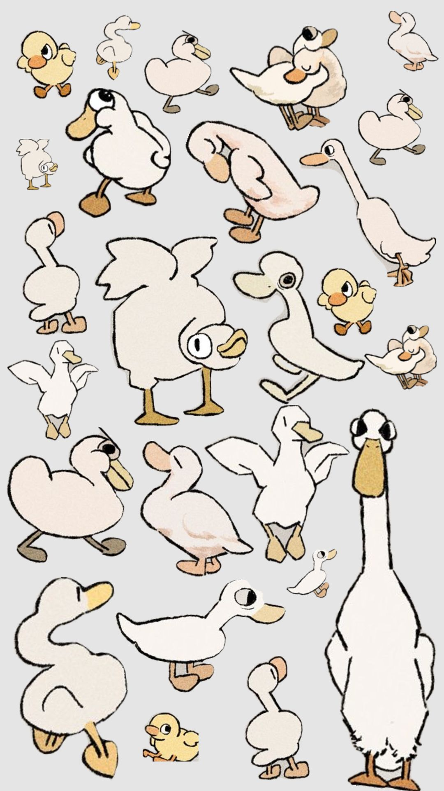
Сколько их?!
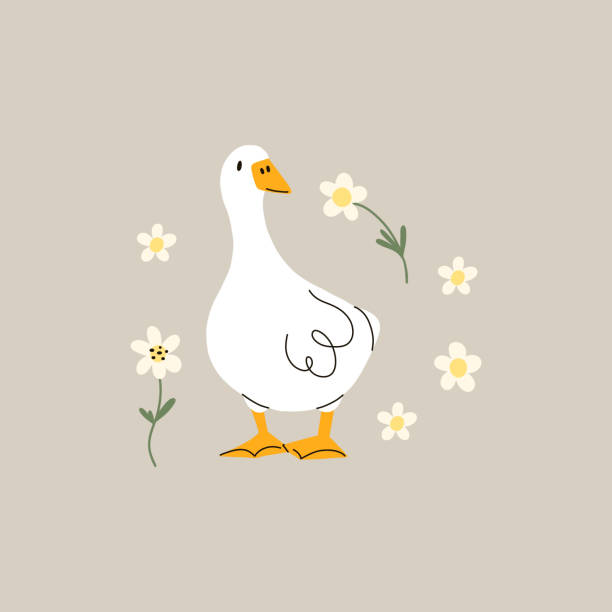
Гусь в ромашках
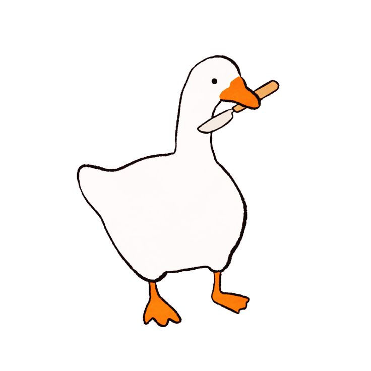
Опасный гусик